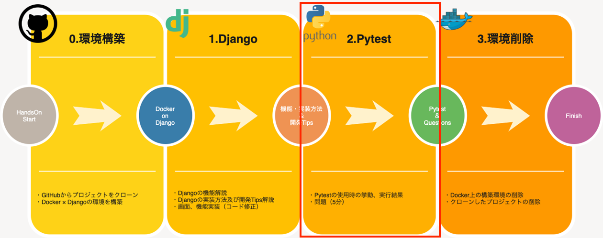

<!DOCTYPE HTML>
<html lang="ja" >
    <head>
        <meta charset="UTF-8">
        <title>5. Pytest · mirameet</title>
        <meta http-equiv="X-UA-Compatible" content="IE=edge" />
        <meta name="description" content="">
        <meta name="generator" content="HonKit 3.6.20">
        
        
        
    
    <link rel="stylesheet" href="gitbook/style.css">

    
            
                
                <link rel="stylesheet" href="gitbook/gitbook-plugin-search-pro-fixed/search.css">
                
            
                
                <link rel="stylesheet" href="gitbook/gitbook-plugin-anchors/plugin.css">
                
            
                
                <link rel="stylesheet" href="gitbook/gitbook-plugin-navigator/plugin.css">
                
            
                
                <link rel="stylesheet" href="gitbook/gitbook-plugin-collapsible-chapters/collapsible-chapters.css">
                
            
                
                <link rel="stylesheet" href="gitbook/gitbook-plugin-hints/plugin-hints.css">
                
            
                
                <link rel="stylesheet" href="gitbook/gitbook-plugin-insert-logo/plugin.css">
                
            
                
                <link rel="stylesheet" href="gitbook/gitbook-plugin-highlight/website.css">
                
            
                
                <link rel="stylesheet" href="gitbook/gitbook-plugin-fontsettings/website.css">
                
            
        

    

    
        
    
        
    
        
    
        
    
        
    
        
    

        
    
    
    <meta name="HandheldFriendly" content="true"/>
    <meta name="viewport" content="width=device-width, initial-scale=1, user-scalable=no">
    <meta name="apple-mobile-web-app-capable" content="yes">
    <meta name="apple-mobile-web-app-status-bar-style" content="black">
    <link rel="apple-touch-icon-precomposed" sizes="152x152" href="gitbook/images/apple-touch-icon-precomposed-152.png">
    <link rel="shortcut icon" href="gitbook/images/favicon.ico" type="image/x-icon">

    
    <link rel="next" href="Section9.html" />
    
    
    <link rel="prev" href="Section5.html" />
    

    </head>
    <body>
        
<div class="book honkit-cloak">
    <div class="book-summary">
        
            
<div id="book-search-input" role="search">
    <input type="text" placeholder="検索ワードを入力" />
</div>

            
                <nav role="navigation">
                


<ul class="summary">
    
    

    

    
        
        
    
        <li class="chapter " data-level="1.1" data-path="./">
            
                <a href="./">
            
                    
                    はじめに
            
                </a>
            

            
        </li>
    
        <li class="chapter " data-level="1.2" data-path="Section2.html">
            
                <a href="Section2.html">
            
                    
                    1. デモアプリクローン
            
                </a>
            

            
        </li>
    
        <li class="chapter " data-level="1.3" data-path="Section3.html">
            
                <a href="Section3.html">
            
                    
                    2. アプリケーションコード修正を行う前に
            
                </a>
            

            
        </li>
    
        <li class="chapter " data-level="1.4" data-path="Section4.html">
            
                <a href="Section4.html">
            
                    
                    3. アプリケーションコード修正（商品情報検索画面）
            
                </a>
            

            
        </li>
    
        <li class="chapter " data-level="1.5" data-path="Section5.html">
            
                <a href="Section5.html">
            
                    
                    4. アプリケーションコード修正（商品情報詳細画面）
            
                </a>
            

            
        </li>
    
        <li class="chapter active" data-level="1.6" data-path="Section8.html">
            
                <a href="Section8.html">
            
                    
                    5. Pytest
            
                </a>
            

            
        </li>
    
        <li class="chapter " data-level="1.7" data-path="Section9.html">
            
                <a href="Section9.html">
            
                    
                    6. Pytest エラーの修正 -問題-
            
                </a>
            

            
        </li>
    
        <li class="chapter " data-level="1.8" data-path="Section10.html">
            
                <a href="Section10.html">
            
                    
                    7. Pytest エラーの修正 -回答-
            
                </a>
            

            
        </li>
    
        <li class="chapter " data-level="1.9" data-path="Section11.html">
            
                <a href="Section11.html">
            
                    
                    8. 構築環境の掃除
            
                </a>
            

            
        </li>
    

    

    <li class="divider"></li>

    <li>
        <a href="https://github.com/honkit/honkit" target="blank" class="gitbook-link">
            HonKitで公開 
        </a>
    </li>
</ul>


                </nav>
            
        
    </div>

    <div class="book-body">
        
            <div class="body-inner">
                
                    

<div class="book-header" role="navigation">
    

    <!-- Title -->
    <h1>
        <i class="fa fa-circle-o-notch fa-spin"></i>
        <a href="." >5. Pytest</a>
    </h1>
</div>


                    <div class="page-wrapper" tabindex="-1" role="main">
                        <div class="page-inner">
                            
<div id="book-search-results">
    <div class="search-noresults">
    
                                <section class="normal markdown-section">
                                
                                <h1 id="Pytest"><a name="pytest" class="plugin-anchor" href="#pytest"><i class="fa fa-link" aria-hidden="true"></i></a>Pytest</h1>
<p>当手順では以下の赤枠部分を実施します。</p>
<p></p>
<p>この手順ではPytestを実行させたときにどんな動きをするのか。また、失敗した際にどんな内容で表示されるのかを確認したいと思います。
なお、ここで確認できた内容を踏まえて、次のセクションではテストに関する簡単な問題を出題します。</p>
<p>問題の回答についても用意しておりますので、ぜひ問題にトライしてみましょう！</p>
<p><strong>今回用意したテストファイル</strong></p>
<ul>
<li><code>app/product/test/conftest.py</code><br>
pytestでテスト実行する際のDBアクセス設定を共通部品として記述しています。</li>
<li><code>app/product/test/crud_test.py</code><br>
データのCreate, Read, Updateのテストを記述しています。</li>
<li><code>app/product/test/views_test.py</code><br>
Viewに対しテストコードを記述する為、pytest-djangoという拡張機能を使用します。<br>
・正しいtemplateを使用しているか<br>
・正しいステータスコードが返却されているか<br>
についてのテストを実施します。</li>
</ul>
<h2 id="Pytestの挙動">1. Pytestの挙動</h2>
<p>Pytestはターミナル上で以下のコマンドを実行すると、自動でテストコードを感知し実行してくれます。</p>
<pre><code class="lang-sh"><span class="hljs-comment"># プロジェクト配下ですべてのテストを実行するとき</span>
pytest .
</code></pre>
<pre><code class="lang-sh"><span class="hljs-comment"># テストケースを指定して実行したいとき</span>
pytest app/product/tests.py
</code></pre>
<h3 id="【テスト成功時】">1.1. 【テスト成功時】</h3>
<p>成功となった際には以下のようにターミナルへ出力され、実行したテストファイルやメソッドの数、テストの所要時間などが確認出来ます。</p>
<p></p>
<h3 id="【テスト失敗時】">1.2. 【テスト失敗時】</h3>
<p>テストに失敗してしまった際にも同様にターミナルへ出力されますが、
以下のように<strong>どこの箇所</strong>で<strong>どんなエラー</strong>が発生しているかを教えてくれます！</p>
<p></p>
<p>上記の画像では、</p>
<ul>
<li>「test_create」 関数で</li>
<li>「assert result == expected」の箇所で</li>
<li>「AssertionError」のエラー（例外）が発生している</li>
<li>「１つがfailed(失敗)、２つがパス（成功）している」</li>
</ul>
<p>ということが分かります。</p>
<p>このように出力される結果が容易にテスト結果を把握できます。</p>
<div id="anchors-navbar"><i class="fa fa-anchor"></i><ul><p><a href="#Pytest">Pytest</a></p><li><a href="#Pytestの挙動">1. Pytestの挙動</a></li><ul><li><a href="#【テスト成功時】">1.1. 【テスト成功時】</a></li><li><a href="#【テスト失敗時】">1.2. 【テスト失敗時】</a></li></ul></ul></div><a href="#Pytestの挙動" id="goTop"><i class="fa fa-arrow-up"></i></a>
                                
                                </section>
                            
    </div>
    <div class="search-results">
        <div class="has-results">
            
            <h1 class="search-results-title"><span class='search-results-count'></span> results matching "<span class='search-query'></span>"</h1>
            <ul class="search-results-list"></ul>
            
        </div>
        <div class="no-results">
            
            <h1 class="search-results-title">No results matching "<span class='search-query'></span>"</h1>
            
        </div>
    </div>
</div>

                        </div>
                    </div>
                
            </div>

            
                
                <a href="Section5.html" class="navigation navigation-prev " aria-label="Previous page: 4. アプリケーションコード修正（商品情報詳細画面）">
                    <i class="fa fa-angle-left"></i>
                </a>
                
                
                <a href="Section9.html" class="navigation navigation-next " aria-label="Next page: 6. Pytest エラーの修正 -問題-">
                    <i class="fa fa-angle-right"></i>
                </a>
                
            
        
    </div>

    <script>
        var gitbook = gitbook || [];
        gitbook.push(function() {
            gitbook.page.hasChanged({"page":{"title":"5. Pytest","level":"1.6","depth":1,"next":{"title":"6. Pytest エラーの修正 -問題-","level":"1.7","depth":1,"path":"Section9.md","ref":"Section9.md","articles":[]},"previous":{"title":"4. アプリケーションコード修正（商品情報詳細画面）","level":"1.5","depth":1,"path":"Section5.md","ref":"Section5.md","articles":[]},"dir":"ltr"},"config":{"plugins":["search-pro-fixed","-lunr","-search","hide-published-with","anchors","navigator","collapsible-chapters","hints","copy-code-button","custom-favicon","insert-logo"],"styles":{"website":"styles/website.css","pdf":"styles/pdf.css","epub":"styles/epub.css","mobi":"styles/mobi.css","ebook":"styles/ebook.css","print":"styles/print.css"},"pluginsConfig":{"collapsible-chapters":{},"hints":{"info":"fa fa-info-circle","tip":"fa fa-mortar-board","danger":"fa fa-exclamation-circle","working":"fa fa-wrench"},"search-pro-fixed":{},"hide-published-with":{},"fontsettings":{"theme":"white","family":"sans","size":2},"highlight":{},"favicon":"./img/miracleave.ico","navigator":{},"custom-favicon":{},"copy-code-button":{},"theme-default":{"styles":{"website":"styles/website.css","pdf":"styles/pdf.css","epub":"styles/epub.css","mobi":"styles/mobi.css","ebook":"styles/ebook.css","print":"styles/print.css"},"showLevel":false},"anchors":{},"insert-logo":{"url":"./img/miracleave.png","style":"background: none; width: 100%;"}},"theme":"default","pdf":{"pageNumbers":true,"fontSize":12,"fontFamily":"Arial","paperSize":"a4","chapterMark":"pagebreak","pageBreaksBefore":"/","margin":{"right":62,"left":62,"top":56,"bottom":56},"embedFonts":false},"structure":{"langs":"LANGS.md","readme":"README.md","glossary":"GLOSSARY.md","summary":"SUMMARY.md"},"variables":{},"title":"mirameet","language":"ja","gitbook":"*"},"file":{"path":"Section8.md","mtime":"2021-09-06T21:48:51.320Z","type":"markdown"},"gitbook":{"version":"3.6.20","time":"2021-09-06T21:51:29.509Z"},"basePath":".","book":{"language":""}});
        });
    </script>
</div>

        
    <noscript>
        <style>
            .honkit-cloak {
                display: block !important;
            }
        </style>
    </noscript>
    <script>
        // Restore sidebar state as critical path for prevent layout shift
        function __init__getSidebarState(defaultValue){
            var baseKey = "";
            var key = baseKey + ":sidebar";
            try {
                var value = localStorage[key];
                if (value === undefined) {
                    return defaultValue;
                }
                var parsed = JSON.parse(value);
                return parsed == null ? defaultValue : parsed;
            } catch (e) {
                return defaultValue;
            }
        }
        function __init__restoreLastSidebarState() {
            var isMobile = window.matchMedia("(max-width: 600px)").matches;
            if (isMobile) {
                // Init last state if not mobile
                return;
            }
            var sidebarState = __init__getSidebarState(true);
            var book = document.querySelector(".book");
            // Show sidebar if it enabled
            if (sidebarState && book) {
                book.classList.add("without-animation", "with-summary");
            }
        }

        try {
            __init__restoreLastSidebarState();
        } finally {
            var book = document.querySelector(".book");
            book.classList.remove("honkit-cloak");
        }
    </script>
    <script src="gitbook/gitbook.js"></script>
    <script src="gitbook/theme.js"></script>
    
        
        <script src="gitbook/gitbook-plugin-search-pro-fixed/jquery.mark.min.js"></script>
        
    
        
        <script src="gitbook/gitbook-plugin-search-pro-fixed/search.js"></script>
        
    
        
        <script src="gitbook/gitbook-plugin-hide-published-with/plugin.js"></script>
        
    
        
        <script src="gitbook/gitbook-plugin-collapsible-chapters/collapsible-chapters.js"></script>
        
    
        
        <script src="gitbook/gitbook-plugin-copy-code-button/toggle.js"></script>
        
    
        
        <script src="gitbook/gitbook-plugin-insert-logo/plugin.js"></script>
        
    
        
        <script src="gitbook/gitbook-plugin-fontsettings/fontsettings.js"></script>
        
    

    </body>
</html>

